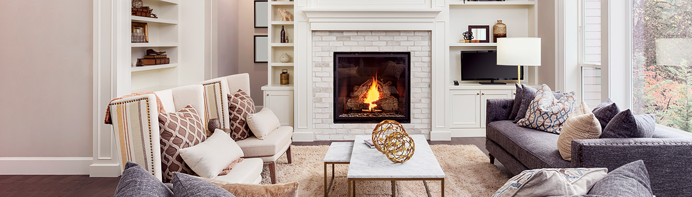

― Cовременная интерпретация шале в дом ―
Шале – это стильный, по-домашнему уютный и очень надежный в эксплуатации небольшой альпийский сельский дом. Популярность стиля и увлечение альпийской архитектурой в последнее время необычайно выросла. Это объясняется, прежде всего, возросшим интересом к горнолыжному спорту и туризму, и, прежде всего, к альпийским лыжным курортам. Кроме того, альпийский стиль особенно популярен среди людей, стремящихся к уединению и покою, тех, кто ценит простоту, уют и тепло. Его выбирают творческие и романтические натуры, истинные ценители культурного наследия, вековых традиций и качества.― Семейная квартира в стиле лофт ―
Этот проект – наглядная инструкция, как органично использовать элементы шале в городской квартире. «Незакрытые потолочные балки – яркий признак стиля. Мы обыграли его, отделав темным деревом одну из стен и потолок в спальне. Натуральные ткани, спокойная цветовая гамма, обилие дерева и камня – другие атрибуты шале тоже прекрасно вписались в интерьер».― Семейная квартира в стиле лофт ―
Этот проект – наглядная инструкция, как органично использовать элементы шале в городской квартире. «Незакрытые потолочные балки – яркий признак стиля. Мы обыграли его, отделав темным деревом одну из стен и потолок в спальне. Натуральные ткани, спокойная цветовая гамма, обилие дерева и камня – другие атрибуты шале тоже прекрасно вписались в интерьер».― Проект трешки в Cталинке ―
Кирпичная кладка в гостиной, нестандартное безрамочное освещение и цветные стены – рассказываем о дизайн-проекте стильной трехкомнатной квартиры для современной молодой семьиВ квартире в кирпичном сталинском доме 30-х годов практически не было несущих стен, что значительно облегчило работу архитектора. В результате небольшой перепланировки он увеличил площадь узкой кухни, разделил санузел на общую и приватную зоны, а в спальне обустроил компактную гардеробную со столиком для макияжа. Так обычная трешка площадью 84 квадрата превратилась в комфортное и современное жилье для молодой семейной пары. О своей работе над этим проектом нам рассказал Степан Бугаев, арт-директор студии «Победа дизайна».